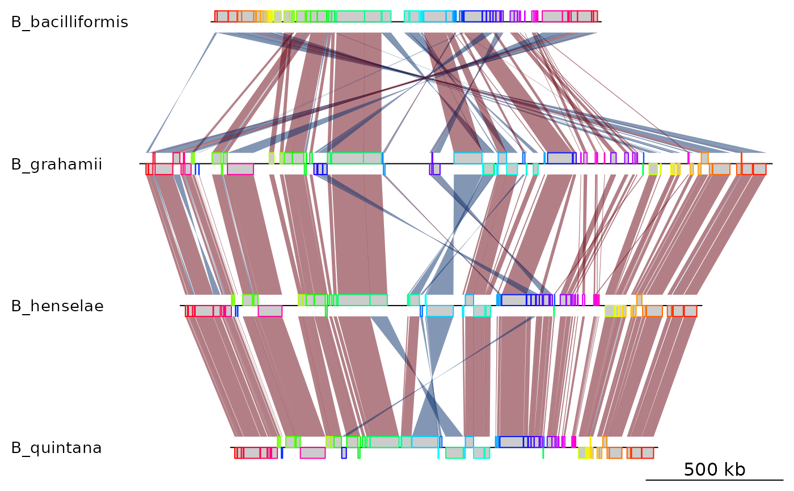
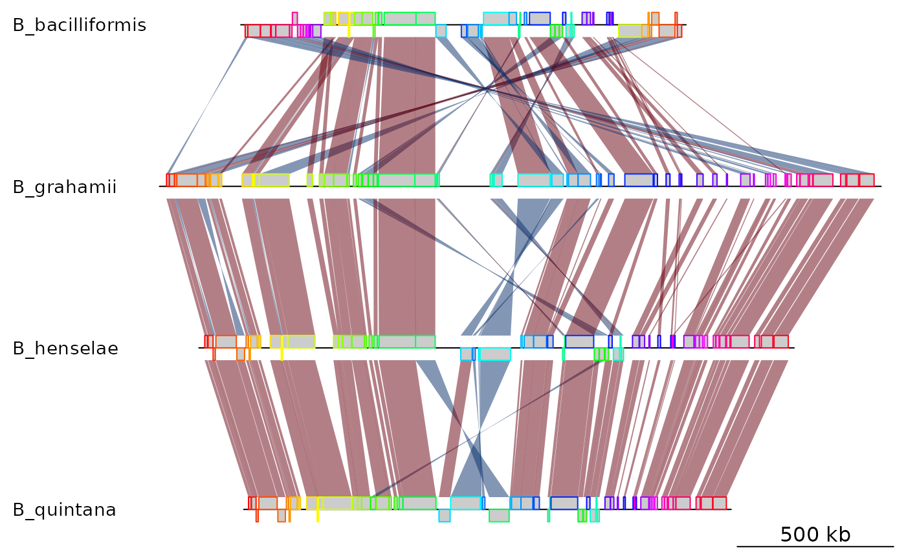

Read mauve backbone files to create dna_segs and comparisons
read_mauve_backbone.RdParses Progressive Mauve backbone files to create a list of dna_segs, and a
matching list of comparisons between them.
Usage
read_mauve_backbone(
file,
ref = 1,
gene_type = "side_blocks",
header = TRUE,
filter_low = 0,
common_blocks_only = TRUE,
...
)Arguments
- file
A character string containing a file path, or a file connection.
- ref
A numeric indicating which DNA segment to use as the reference, i.e. which one will have its blocks in order.
- gene_type
A character string, determines how genes are visualized. Must be a valid gene type (see gene_types).
- header
Logical. If
TRUE, parses the first line of the file as a header containing column names.- filter_low
A numeric, if larger than 0, all blocks smaller than this number will be filtered out.
- common_blocks_only
Logical. If TRUE, reads only common blocks (core blocks).
- ...
Further arguments to pass to as.dna_seg.
Value
A list with 2 named elements: dna_segs and comparisons, which
are both lists containing the dna_seg and comparison objects,
respectively.
Details
Mauve Backbone files are tabular files that summarize similarities between
genomes in blocks. Each genome has 2 columns containing the start and end
coordinates of each block, respectively. The header, if present, uses
sequence numbers instead of genome names. See
https://darlinglab.org/mauve/user-guide/files.html for more info on the file
format. This function should be able to read both progressiveMauve and
mauveAligner outputs.
Examples
## Mauve backbone
bbone_file <- system.file('extdata/barto.backbone', package = 'genoPlotR')
bbone <- read_mauve_backbone(bbone_file)
names <- c("B_bacilliformis", "B_grahamii", "B_henselae", "B_quintana")
names(bbone$dna_segs) <- names
## Plot
plot_gene_map(dna_segs = bbone$dna_segs, comparisons = bbone$comparisons)

## Using filter_low & changing reference sequence
bbone <- read_mauve_backbone(bbone_file, ref = 2, filter_low = 2000)
names(bbone$dna_segs) <- names
plot_gene_map(dna_segs = bbone$dna_segs, comparisons = bbone$comparisons)
